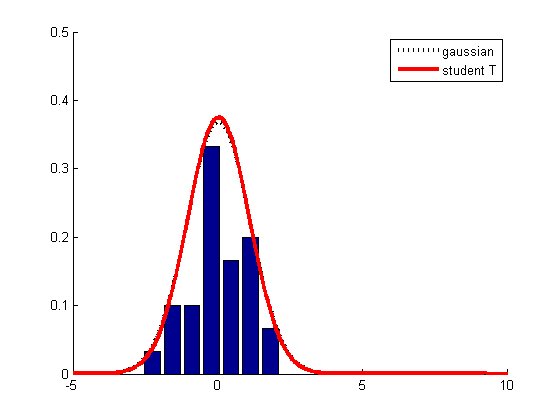
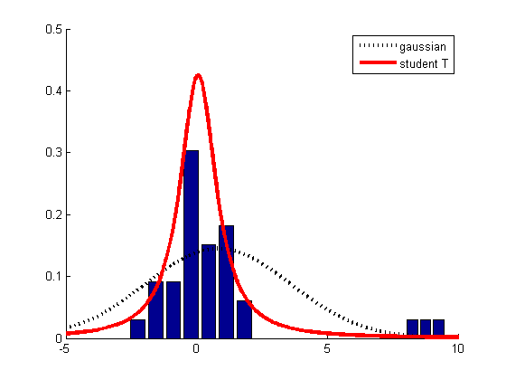

Illustrate the robustness of the t-distribution compared to the Gaussian
Contents
% This file is from pmtk3.googlecode.com function gaussVsStudentOutlierDemo()
n = 30; setSeed(8); data = randn(n,1); outliers = [8 ; 8.75 ; 9.5]; nn = length(outliers); nbins = 7;
figure;
plotHist(data,nbins,n);
plotPDFs(data);
printPmtkFigure('gaussVsT')
figure;
plotHist(data,nbins,n+nn);
plotHist(outliers,nn,n+nn);
plotPDFs([data ; outliers]);
printPmtkFigure('gaussVsToutlier')
Bucket the data into nbins, divide the size of each bin by norm and plot
the normalized histogram.
function plotHist(data,nbins,norm) hold on; [counts, locations] = hist(data,nbins); sCounts = counts ./ norm; bar(locations,sCounts); end
function plotPDFs(data)
Xbar = mean(data);
sigma = std(data);
gauss = @(X)gaussProb(X,Xbar,sigma.^2);
use pmtk's EM algorithm
model = studentFitEm(data);
sT = @(X)exp(studentLogprob(model, X));
hold on;
x = (-5:0.01:10)';
h(1) = plot(x,gauss(x),'k:','LineWidth',3);
h(2) = plot(x,sT(x),'r-','LineWidth',3);
axis([-5,10,0,0.5]);
set(gca,'YTick',0:0.1:0.5);
if isOctave(),
legend('gaussian', 'student T')
else
legend(h, 'gaussian', 'student T')
end
  end
end